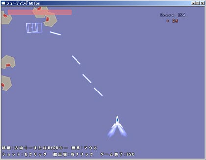

シルバーセカンド開発日誌
プチ作品 2/2
■
2007-03-09 (金) シューティングもどき▼過去のプチ作品紹介第一弾
VC++で組んだシューティングゲームもどき。
（2006/2/26の日誌より引用）

といってもキャラが動いて攻撃の当たり判定が設定できるように
なっているだけですが、お暇な方は↓からどうぞ。
【シューティングプロトタイプ(500KB)のダウンロードはこちら】
移動は方向キーかWASD(W:上、A:左、D:右、S:下）で、
ショットはマウス左クリックです。右クリックで敵が出ます。
DirectX9じゃないと動かないかもしれません。
敵は赤い所にショットを当てないとダメージを与えられません。 
Docomo用アプリADVの主人公、シェパード刑事。
現在、エンターブレインさんのツクモバ用お仕事を続行中です。
いくら何でも作りかけ作品が山積みなので
パパっと終わらせて早くPCゲームに戻りたいと思います。
シルエットノート追加シナリオも並行作成中。
プロットというものを生まれて初めて書いたのですが、
（プロットといっても話全体の流れを80行くらいで書いて、
あとついでにキャラ説明を書いただけのもの）
このプロットが手元にあるだけで、本文（セリフ）を
書くスピードが今までより段違いに早くなってビックリしました。
段取り7分作業3分とはよく言ったものです。
ただしそれで作るとほとんどギャグ無しになってしまうのが難。
普通あらすじそのものにはギャグ入れないもんなぁ……。
プロットの利点は、シナリオを高速に書けることのようなので、
これであとは面白く作れるようになれれば、
クオリティの高いものが高速に作れるという
望ましい状態に持っていけるかもしれません。
あらすじの物語を破綻させずに笑い等の面白さを増すことに
ついてはまだまだ未熟、頑張りたいと思います。
あと、容量の制限でお話を比較的短く
まとめなければならないのがこれまた問題。
普段はページ数制限や容量制限といった
たぐいの量制限は全然なかったのですが、
実際直面してみるとこの調整は凄く難しそうです。
ファミコン・スーパーファミコン時代のゲーム開発者の方々は
よく頑張ったんだろうなあと思います。
せっかくなので、この機会にそういった思考も
少しは身につけていきたいと思ってます。
そういえば、話は変わりますが、
最近アクセス元サイト一覧なんかを覗いていると
Wikipediaからのアクセスが結構多くなってきています。
Wikipediaには自分（作者）が忘れていることも
いっぱい書いてあったりして、作者用の
参考資料としても非常にお世話になっています。
内容を書いてくださってる親切な方には感謝の限り。
すでに千夜一夜の項目があったりして、気が早いなあ、
なんて思ったりしますけれど。
でも私のハンドルネーム、一文字目は大文字です！
見聞録や幻想譚説明で作者名が
smokingWOLFのまま放置(2007/02/28 19:00現在)
されててギャー！Wikipediaって作者本人が
いじってもいいのかな。■
2007-02-20 (火) 初めての創作系お仕事▼
ADVツクール for Mobile(インターネットアーカイブ)を試しに使って表示してみたもの。
最初書いてみたのは後ろの2人＝女の子という修羅場シーンだったのに
グラフィック差し替えただけで途端にデンジャーゾーン！
真っ先にこんなことが浮かぶ自分がちょっと嫌！！
さて皆さんの期待を裏切って（？）受けた
（株）エンターブレインさんからのお仕事なんですが、
とりあえずまずはプロット作ってねとのことだったので
作業開始してボチボチと作り始めております。
上ではサンプル画像使って遊んでますが、
いちおうグラフィックは全自作で行く予定です。
それにしても今までプロットなんて書いたことないや……
うちADVゲームが主力なのに何やってんだろう自分フハハ。
しかも容量制限が画像音楽込み400KBと
厳しいので色々考え所ができそうです。
ただ、私は投稿作品を遊べないので
内容は分からないのですが、
投稿作品の審査員コメントなど見てると
結構指摘が厳しいなあという印象です。
「げっ、自分ので大丈夫なのか！？」と心配が尽きません。
なんせ初作品（レジェンドオブレストール）には
ストーリーがないという偉業(!?)を成し遂げたからなぁ、うーむ。
まあ、頼まれたからには向こうもそれなりの力量があると
見込んでくれているのだし、やるだけやってみるのみ！■
2007-02-11 (日) 前の休日っていつだっけ▼
やりました、超久しぶりの奇跡的な休日です。
今まで絵をちっとも描いてなかったので
そろそろ1000万ヒットの記念に久しぶりに絵描いてます。
まともに絵描いたのって何ヶ月ぶりだったかなあ、
などと思い出して恐怖です。
それにしても1000万で8年目って自分でもびっくりです。
一人でサイト運営してきてよくここまで来たなあと思います。
途中で何度ホームページ閉鎖しようと思ったりしたか
数えるとキリがないかもしれません、
たぶん3年目あたりで吹っ切れましたけれど。
もちろん、ここまで来られたのは自分一人のおかげじゃなくて
開発を手伝ってくださった方や、来てくださる多くの方や、
今回もそうですがデバッグに深くご協力してくださる方がいらしたり、
応援してくださったり元気を下さったりする方がいらしたりしてこそ、
今の状態があります。全ての方に心から感謝したい気持ちです。
最高潮に忙しい時期は何とか乗り切ったので、
今後は週刊更新に切り替えられそうです。
エンターブレインさんからも仕事を請けたので
そちらと並行しつつ、開発に臨んでいきたいと思います。
（ツクールモバイル ＡＤＶツクール for Mobileのサンプル制作）
なお、プレイ層が限られそう（Docomo携帯のみ）なので、
過去作品との繋がりがないお話で作ろうと思います。
参考までに、過去に集計した情報を
以下に記載しておきます。
Docomo携帯の人 94人中44人（47％）
Au携帯の人 94人中33人（35％）
SoftBank携帯の人 94人中8人（8.5％）
ツクモバに登録している人 94人中10人（10.6％）
[Docomoの人限定だと 44人中10人（23％）]
となると、どう考えても来てくださる方のうち半数はプレイ不可。
せめてAuにも対応ならば約8割の方が遊べるので
ウホホーなんですが、なかなか向こう様も難しい模様で。
一応、「作った内容はそのゲームが公開されなくなった段階で
こっちで移植してもOK」という旨の言質を取っておいたので、
Docomoじゃないからもう一生遊べないとかそんなことは
ありません、その点についてはどうかご安心を。
（※ただ、移植する際は一言連絡してね、と担当者様が仰ってました。
他の開発者様はその点ちょっとご注意あれ）
去年作ったダンジョンRPGもどき
製作日誌まで月刊になりそうでピンチです。
だって休日まで普通に研究してるんだもの！
あと数週間で色んなことが一段落するので、
そうしたら週刊に戻したいと思います！
あまりにもネタがないので
去年の8月頃にこっそり自作ツールのサンプル的に
作ったダンジョンRPGを載せてみます。
ただ容量の割にプレイ時間はクソ短いです。
「クリフ迷宮録」 4MB Zip プレイ時間10分くらい
2/5 22:00更新 家裏にイベント残ってるミスと
ロード時の大量メモリ食いバグを修正
2/9 Win98,Meで強制終了するバグを修正
（マップチップ製作・デバッグ協力 すう 様
＋ 卑しい人 様 、安陵 様）
シルフェイド見聞録の戦闘システムにプラスアルファした程度の
システムですが、システムの説明が入っていないので
そのあたりがちょっと不親切です。
もともと公開する予定無しだったもんで。
それと、ベースがプログラム作品である都合上、
動作したり動作しなかったりする可能性があるので
感想・動作不良その他全てのご意見は全てこちらでお願いします。
シルフェイド同盟 交流掲示板
『クリフ迷宮録スレッド』(※閉鎖)
ただし現在もメチャ忙しい状態なので修正が
しばらく後になりそうです、どうかご了承下さい。■
2006-02-26 (日) DirectXでミニシューティングゲーム▼
シル見に疲れたときにポツポツ作ってたシューティング。
シルフドラグーン本格Verぽいイメージを予定。
といってもキャラが動いて攻撃の当たり判定が設定できるように
なっただけですが、お暇な方は↓からどうぞ。
【シューティングプロトタイプ(500KB)のダウンロードはこちら】
移動は方向キーかWASD(W:上、A:左、D:右、S:下）で、
ショットはマウス左クリックです。右クリックで敵が出ます。
DirectX9じゃないと動かないかもしれません。
敵は赤い所にショットを当てないとダメージを与えられません。
DirectXで色々やってみたのですが、ツクールXPと違って
メモリ周りの管理が自由にできるので、
作り手次第でいくらでも処理を軽くできそうです。
ツクールでいうところのハッシュみたいな機能も一応
C++に備わっていますし、やや融通が利かないのを除けば
ツクールXPとそう変わらなさそうな予感です。
ただメモリ周りが自由な代わりに、
メモリの扱いが難解なときもあります。
Windowsアプリケーションの作り方はまだまだ勉強中。
シル見も並行して開発中。
勉強って面白いなあ。 プチ作品 2/2
Copyright © SmokingWOLF / Silver Second
 カテゴリ: プチ作品
カテゴリ: プチ作品 カテゴリ: プチ作品
カテゴリ: プチ作品